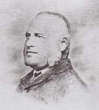

Beginning -1854, The Roman Catholic Church had established itself in the maritime areas from 1505. In 1820, the superior of all the Oratorians in Ceylon, Vincent de Rozairo, himself came as the first missionary to Kandy. He put up a church, which occupied the very same grounds whereon the present Scots Kirk stands. In 1828, the Scots Kirk site was found to be too small and hilly and accordingly a petition was submitted to the Governor-General Sir Edward Barnes who promptly presented the Catholic Church with a new site. It was roughly a square 152 ft. by 150 ft. upon which the second Roman Catholic Church was built. This is the very same site on which St. Anthony's Cathedral stands today. It was realized that building churches alone would not contribute to the success of the missionary efforts that commenced in 1820.
In September 1843, an Italian Oratorian, Fr. Orazio Bettacchini was sent to the Kandyan mission who, during his missionary year 1843/44, opened a school in Kandy on the same premises. However, in August 1844, his successor Fr. Andrew J. Reinaud, who continued as missionary until 1848, began his missionary career by pulling down the school, which Fr. Bettacchini had put up. This was the subject of a letter of complaint made by Fr. Bettacchini himself.
Yet, it was not until November 1853, when Fr. Felice Zoppi, a Franciscan from the Chinese missionary field was sent to Kandy by Monsignor Joseph Maria Bravi OSB, that Fr. Bettacchini's complaint was looked into. Fr. Zoppi promptly set about his task by opening a school for boys and one for girls at the house where he resided, in January of 1854, with a Mr. Van Twest as Head Teacher of the Boys School.
This was the birth of St. Anthony's College. Soon after which, Fr. Zoppi obediently sent word to Mgr. Bravi through Fr. Leone Cingolani, informing him of his success in opening the schools. But the message was never delivered and Fr. Zoppi subsequently wrote to Mgr. Bravi who replied on 12th March 1854, officially acknowledging the opening of both schools, at the present premises of St. Anthony's Cathedral.
Although it is said that; Fr. Zoppi, being a Franciscan, chose to name the school after their illustrious Saint, there is also evidence that the Church had been dedicated to St. Anthony at a much earlier date. The number of students on roll at the inception was 62 boys and 28 girls. The Girls School was shifted to Katukelle in 1887, where a Convent was opened for Good Shepherd Nuns.
Mr. Paul Poorey took over the administration of the Boys School from Mr. Van Twest in 1855, contributing immensely to the efficiency and prestige the school enjoyed in its formative years. Fr. Zoppi left the country at the end of September 1856. In the absence of sufficient missionaries to take over the school, which was then a parish school, a succession of laymen in; M/s. F. Peiris, F. De Silva, K.A. Fernando, A. Staples, A.B. Geddes and O.D. Paul, carried on the administration until 1870. In 1867, St. Anthony's Boys' School was referred as the 'second best school in English' among all the schools established by the Missionaries.R_P_Jansz In 1870, the Irish Christian Brothers John and Paul took over the administration, temporarily. In 1871, the school was run by Mr. W. Hopp, who managed affairs until 1872 and handed the administration over to Mr. J. Jorden, who held the reigns until 1875 when Fr. Dom Hildebrand Vanderstraaten OSB was installed as Principal, marking the entrusting of the administration and management of the school to the Benedictine monks, who erected the Abbey of St. Anthony's in Kandy in 1874. Fr. D. Paul Perera O.S.B succeeded Fr. Vanderstraaten in 1876, in which year it is recorded that boarding life was first introduced, and in 1877 handed over to Fr. D.M. Craner, until 1879. In that year, due to the scarcity of missionaries, secular teachers managed the school with Mr. R.P. Jansz as Head Master from 1880 to 1892, working in harmony with the Benedictine Fathers over a period of twelve years during which time the school made very good progress. The student population by 1887 had grown to 92; 5 of whom were boarders. St. Anthony's Cathedral was built in 1876 on the initiative of Fr. Gingolani. Upon Mr. Jansz's retirement in 1892, the Benedictines appointed Fr. Hilarian Leitan OSB, who had only been ordained a priest in December 1891, as Principal. He continued for a period of six years until 1898.

Fr. Leitan was the first, of an unbroken line of OSB Priest-Principals of the College, to date. During his six years in office, he had the services of a few other Benedictine monks - Dom Hildebrand Georgesz, Dom Patrick Mckelvie, Dom Dominic Direckze and for a short term, a Benedictine Father from Scotland, Rev. Ryan whose brothers were in charge of tea plantations. In 1894 the premises known as "Philips Coffee Store", now a part of St. Sylvester's College was purchased by Abbot Pancrazi for the school. St. Anthony's had no playing field then. The use of "Barrack Square" was secured in 1898, for the boys to practice sport.
In January 1899, Fr. Maurus Craner OSB relieved Fr. Leitan as Principal of St. Anthony's. All aspects of higher education were included in the curriculum, that year. In the early days of Fr. Craner's stewardship, there were about fifteen boarders housed in a room under the belfry. Capitalizing on the new extent of land available, he put up buildings including more space to house the boarders, which soon grew to number about fifty. Fr. Craner was a workaholic, and only slept for about four hours a day, in order to perform his duties as Principal, Teacher, Prefect of Boarders, Accountant, Clerk - all rolled in one. Cricket was introduced by Fr. Andrew Vanlangenberg OSB in 1903, and a team known as 'St. Anthony's College Cricket Club' consisting of staff and school boys was formed under the captaincy of Fr. Andrew himself. The inaugural match was played in Colombo versus Colombo Carlton Cricket Club.
The completion of the first fifty years was marked by the first ever schools cricket match involving St. Anthony's, which was played in 1904, against Dharmaraja College, with a 109-run victory for the Antonians.